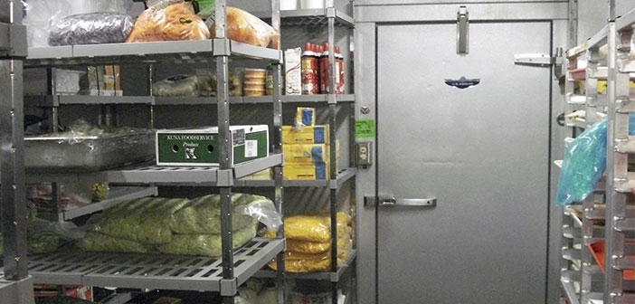

¡Bienvenidos al corazón de nuestra cocina! Los invitamos a descubrir dónde la magia culinaria cobra vida. En nuestra planta de producción, cada ingrediente se selecciona con esmero y cada plato se prepara con pasión y dedicación para llevar a su mesa los sabores que tanto disfrutan. ¡Acompáñennos en este recorrido para conocer el origen de cada deliciosa experiencia!
Nuestra planta de produccion
2000 kg
De aji amarillo procesado mensualmente
100%
Sabores estandarizados
100%
Libres de preservantes
Nuestros procesos
Recepcion de productos
Descubra el proceso fundamental que asegura la calidad en nuestra cocina. Les presentamos la recepción de productos, una etapa crucial donde cada ingrediente es cuidadosamente revisado para cumplir con nuestros estándares. Este es el punto de partida para ofrecerles platos frescos y sabrosos. Acompáñenos a conocer este importante paso.
Procesamiento de productos
Una vez recibidos, nuestros productos frescos son cuidadosamente procesados. Este paso, que incluye limpieza, corte y preparación, es fundamental para asegurar la calidad y el sabor estandarizado. Les invitamos a conocer cómo transformamos los ingredientes en las delicias que disfrutan.

Embazado de productos
Con nuestras salsas y bases listas, el siguiente paso es el empacado. Inmediatamente se colocan en abatidores para enfriarlas rápidamente. Una vez frías, se sellan al vacío para asegurar su frescura hasta el momento de su uso. Finalmente, estas salsas y bases ya listas se almacenan en refrigeración a 4°C.
Distribucion de producto
Tras asegurar la calidad de cada salsa y base, las distribuimos a nuestros 5 locales. Así garantizamos que, sin importar cuál visiten, nuestros comensales disfrutarán de la misma calidad y experiencia en cada plato.
- 